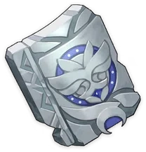
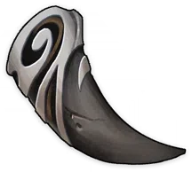
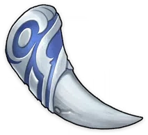
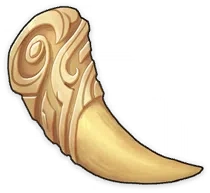

Tile of Decarabian's Tower
Weapon Ascension Material.
The place now known as Stormterror's Lair was once the
capital city of Decarabian, the God of Storms. Since this
dream of prosperity was created entirely by his divine
might, the broken pieces left behind by the shattering of
that dream still possess great power.
Debris of Decarabian's City
Weapon Ascension Material.
Decarabian, the God of Storms, was content with the capital
city he had raised, and accepted the worship of the people
from atop his tower. But he knew not that the people did
not bow to him out of respect or adoration.
Fragment of Decarabian's Epic


Weapon Ascension Material.
Andrius once declared war upon Decarabian, but failed to
even scratch the capital of the Lord of the Tower. If it
were not for the song of freedom that shattered the city in
an instant, Decarabian's dream would have gone on forever.
Scattered Piece of Decarabian's Dream
Weapon Ascension Material.
The people did not bow to Decarabian out of respect or
adoration, but because the harsh winds had laid them low.
This was the shattered dream and ambition of the Anemo
Archon before the rise of Barbatos.
He tried so hard to make his dream come true, and so the
fragments of that dream are still mighty.
Boreal Wolf's Milk Tooth
Weapon Ascension Material.
Andrius' wolf pack is its blessed honor guard, and even the
milk teeth of a wolf cub possess great potential.
In the past, the gods had the responsibility to love all
people. Andrius was therefore quite unusual in that he
became leader of the wolves, while only welcoming abandoned
babies and wanderers when it came to humans.
Boreal Wolf's Cracked Tooth


Weapon Ascension Material.
The life of a wolf is not without violence; broken bones or
cracked teeth are nothing special.
Andrius found humans to be a disappointment, but believed
babies to be innocent. If both the wolf pack and the
adopted children chose each other, then they become a
Lupical, a fated family.
Boreal Wolf's Broken Fang

Weapon Ascension Material.
The wolf pack also understands that humans are not solitary
creatures. The honorary broken tooth is a parting gift said
to bring protection and luck.
In the legends of a far-off world, a female wolf once
adopted two great humans. Their home was known as the Cave
of Wolves, or Lupercal - that word meaning the same thing
as Lupical does in this world.
Boreal Wolf's Nostalgia


Weapon Ascension Material.
The Wolf King, believing himself to despise humans, thought
himself unable to envision a happy life for humanity,
making him unworthy of becoming the Lord of the Winds of
the world. Therefore, he chose to disappear. Yet, in truth,
he gazes on the ones abandoned by the world ever so gently.
Fetters of the Dandelion Gladiator
Weapon Ascension Material.
It's a human thing to exaggerate a hero's story, even to
the point of elevating the fetters that once bound the hero
to the level of an enemy of true freedom.
As a result, these fetters were granted extraordinary
powers.
Chains of the Dandelion Gladiator
Weapon Ascension Material.
The chains that once bound the great hero Vennessa. In
truth, all gladiators would have worn chains in that era,
and Vennessa was but one of many.
Shackles of the Dandelion Gladiator
Weapon Ascension Material.
Vennessa was not truly bound by her chains. If she had so
wished, no ordinary physical constraints forged in
Mondstadt could have held her, for the land there yielded
no ore of exceptional quality, nor did it possess the
divine flame of her ancestral home.
She was only bound by her responsibility to take care of
her tribespeople.
Dream of the Dandelion Gladiator
Weapon Ascension Material.
Vennessa may have been freed from slavery, but she then
found herself subject to many other, even greater forms of
bondage. What began as a duty to her tribespeople extended
to all of Mondstadt, then to the concept of freedom itself,
and beyond a point even to the whole world.
What she really hoped for, in truth, was that the world
might grow stronger.